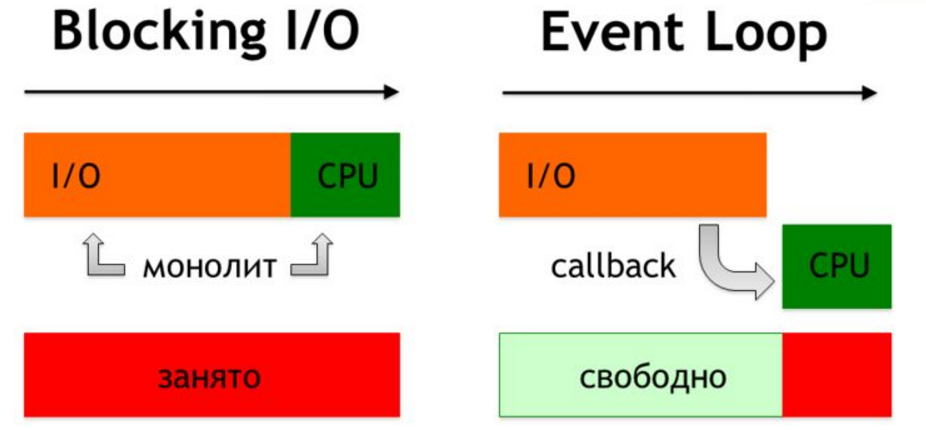
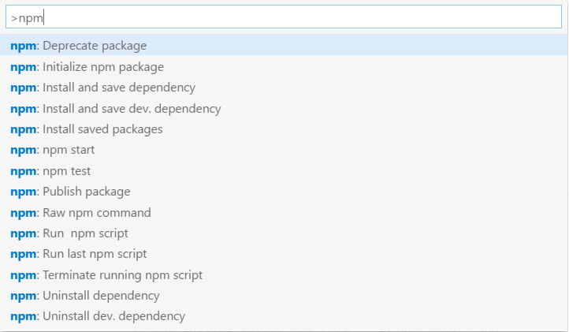

Пакентные менеджеры и системы сборки модулей
Разработка динамичесих веб приложений
Гладкий Максим Валерьевич / github:MaksHladki
Содержание лекции
Node.js за 5 минут
Node.js
Программная платформа, основанная на движке V8 (транслирует JS в машинный код), превращающая JavaScript из узкоспециализированного языка в язык общего назначения. Node.js добавляет возможность JavaScript взаимодействовать с устройствами ввода-вывода через свой API (написанный на C++), подключать другие внешние библиотеки, написанные на разных языках, обеспечивая вызовы к ним из JavaScript-кода
Цель проекта
Предоставить естественную неблокирующую, событийно-ориентированную инфраструктуру для написания программ с высокой конкурентностью» (с) Ryan Dahl
Особенности
- Использует Google V8 (Chromium: Google Chrome, Chrome OS...)
- Превращает V8 в мощную машину для серверных приложений
- Сохраняет философию JavaScript
- Event loop - неблокирующий ввод/вывод
- Все выполняется параллельно, кроме вашего кода
Для чего подходит Node
Много I/O
- RIA (rich internet application)
- API
- Proxy
Realtime
- Чаты
- Онлайн игры
- Трансляции
- Модель Publish/Subscribe
Вспомним Event loop
Пример
// Загружаем модуль http
var http = require('http');
// Создаем web-сервер с обработчиком запросов
var server = http.createServer(function (req, res) {
console.log('Начало обработки запроса');
// Передаем код ответа и http-заголовки
res.writeHead(200, {
'Content-Type': 'text/plain; charset=UTF-8'
});
res.end('Hello world!');
});
// Запускаем web-сервер
server.listen(2002, "127.0.0.1", function () {
console.log('Сервер запущен http://127.0.0.1:2002/');
});
C чего начать
- LTS - расширенная поддержка
- Current - новый функционал
Hello world
>node -v // 7.2.1
>node --version //7.2.1
>node
>console.log('Hello world');
//Hello world
//создаем файл index.js
console.log('Hello World');
>node index.js
//Hello World
Менеджер пакетов Node.js (NPM)
Node.js Package Manage
- Создан в 2009 года open source сообществом
- Цель- помочь JS-разработчикам "шарить" модули с кодом
- Private/Public модули
- Command-line клиент
- Используется даже теми разработчиками, кто не работает с Node.js
- Входит в состав пакета Node.js
Минусы NPM
- Установка небольшого пакета может привести к скачиванию еще 5-10 пакетов, на которые ссылается данный пакет
- Удаление автором пакета может привести к "бездействию" программистов, зависимые пакеты нельзя будет скачать
Пакеты Node.js
- Глобальные - {prefix}/lib/node_modules/ или %AppData%\npm\node_modules
- Локальные - /node_modules (в той же директории, где запущен npm install)
По умолчанию npm будет устанавливать все пакеты в локальном каталоге, в которым вы сейчас работаете
Команды
| install | установка пакета |
| search | поиск пакета |
| view | просмотр инофрмации о пакете |
| uninstall | удаление пакета |
| link | устанавливает связь между пакетами |
| unlink | удаляет связь между пакетами |
| init | инициализация новго пакета |
| publish | публикация пакета в репозитории |
| unpublish | удаление пакета из репозитория |
| owner | изменение прав доступа к пакету в репозитории |
| adduser | добавление нового пользователя |
| list | список установленных пакетов |
| update | обновление пакета либо самого npm |
| config | установка параметров конфигурации |
Команда install
npm install 'package name'
npm install -g 'package name'
npm install --global 'package name'
npm install -g gulp
npm install gulp@3.9.1
Еще пример
> npm install uglify-js --global
└─┬ uglify-js@2.6.2
├── async@0.2.10
├── source-map@0.5.3
├── uglify-to-browserify@1.0.2
└─┬ yargs@3.10.0
├── camelcase@1.2.1
├─┬ cliui@2.1.0
│ ├─┬ center-align@0.1.3
│ │ ├─┬ align-text@0.1.4
│ │ │ ├─┬ kind-of@3.0.2
│ │ │ │ └── is-buffer@1.1.2
│ │ │ ├── longest@1.0.1
│ │ │ └── repeat-string@1.5.4
│ │ └── lazy-cache@1.0.3
│ ├── right-align@0.1.3
│ └── wordwrap@0.0.2
├─┬ decamelize@1.1.2
│ └── escape-string-regexp@1.0.5
└── window-size@0.1.0
Команда search
npm search 'package name'
//не удобно
//лучше использовать ui интерфейс
https://www.npmjs.com/search?q=gulp
Команда view
npm view 'package name'
npm view gulp
//result
{ name: 'gulp',
description: 'The streaming build system',
'dist-tags': { latest: '3.9.1' },
versions:
[ '0.0.1',
'0.0.2',
......
]
author: 'Fractal (http://wearefractal.com/)',
repository: { type: 'git', url: 'git+https://github.com/gulpjs/gulp.git' },
users:
{ '6174': true,
jden: true,
stevelacy: true,
qubyte: true,
.....
}
}
Команда update
npm update [-g] 'package name' //latest version
npm update -g gulp
npm update -g npm
Команда Config
npm config set 'key' 'value' [--global]
npm config get 'key'
npm config delete 'key'
npm config list
npm config edit npm c [set|get|delete|list]
npm get 'key'
npm set 'key' 'value' [--global]
npm set init.author.name "maks"
npm set init.author.email "test@gmail.com"
npm set init.author.url "https://google.com"
Команда uninstall
npm uninstall 'package name' [@version] [--save| [--save-dev] [--global]
//--save пакет будет удален из dependencies
//--save-dev пакет будет удален из devDependencies
npm uninstall sax --save
npm uninstall gulp --global
npm uninstall node-tap --save-dev
npm uninstall dtrace-provider --save-optional
Команда List
npm list [--global] [--depth]
$ npm list -g --depth=0
//без лишних зависимостей
├── npm@3.7.5
└── uglify-js@2.6.2
package.json
Файл package.json содержит в себе информацию о вашем приложении: название, версия, зависимости и тому подобное. Любая директория, в которой есть этот файл, интерпретируется как Node.js-пакет, даже если вы не собираетесь публиковать его. Способ использования файла package.json зависит от того, собираетесь ли вы скачивать пакет или публиковать его.
Основные поля
| name | имя пакета |
| description | описание пакета |
| version | версия пакета |
| keywords | набор ключевых слов |
| authors | информация об авторе пакета |
| main | главный файл пакета |
| license | тип лицензии |
| dependencies | все пакеты, от которых зависит текущий пакет (production) |
| devDependencies | все пакеты, от которых зависит текущий пакет (development) |
| repository | тип репозитория и ссылка на него |
| config | установка параметров конфигурации |
Пример
{
"name": "ddwa",
"version": "1.0.0",
"description": "",
"main": "index.html",
"scripts": {
"test": "echo \"Error: no test specified\" && exit 1"
},
"author": "Maksim Hladki",
"license": "MIT",
"devDependencies": {
"del": "^2.2.2",
"gulp": "^3.9.1",
"gulp-autoprefixer": "^3.1.1",
"gulp-clean-css": "^2.3.2",
"gulp-concat": "^2.6.1",
"gulp-connect": "^5.0.0",
.........
}
}
Спецификация версий пакетов
{ "dependencies" :
{
"foo" : "1.0.0 - 2.9999.9999",
"bar" : ">=1.0.2 <2.1.2",
"baz" : ">1.0.2 <=2.3.4",
"boo" : "2.0.1",
"qux" : "<1.0.0 || >=2.3.1 <2.4.5 || >=2.5.2 <3.0.0",
"asd" : "http://asdf.com/asdf.tar.gz",
"til" : "~1.2",
"elf" : "~1.2.3",// >= 1.2.3 < 1.3.0
"tra" : "^1.2.1",// >= 1.2.1 < 2.0.0
"two" : "2.x",
"thr" : "3.3.x",
"lat" : "latest",
"dyl" : "file:../dyl"
}
}
Работа с npm в VS Code
- ext install vscode-npm (npm - Florian Knop)
- ext install vscode-npm-script (npm - egamma)
- ext install npm-intellisense (npm Intellisense - Christian Kohler)
Пример
bower
http://nano.sapegin.ru/all/bower
Gulp
Webpack
Спасибо за внимание